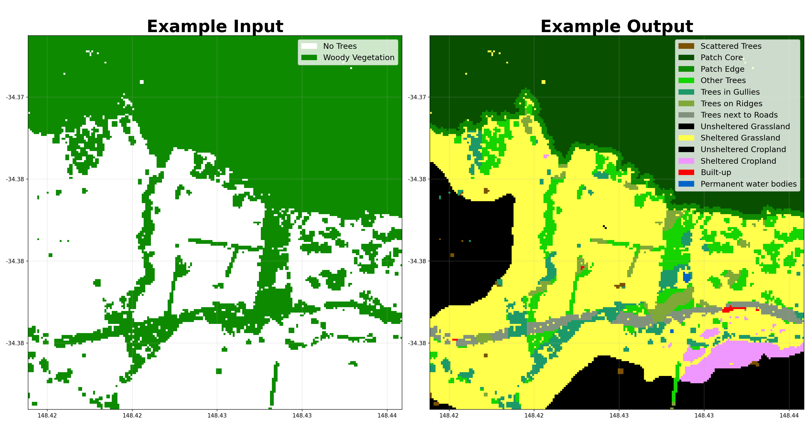

Shelterbelts¶

This is an open-source Python package for mapping and categorising shelterbelts (windbreaks) across Australia using satellite imagery, in preparation for measuring their impacts on agricultural productivity at scale.
Key Features¶
Tree categorisation — classifies pixels as scattered trees, patch core, patch edge, or corridors based on nearby connectivity.
Shelter categorisation — determine sheltered vs. unsheltered areas based on tree density or wind direction, similar to Stewarts et al.
Cover categorisation — integrates ESA WorldCover 2021 land-cover classes (grassland, cropland, urban, water) with shelter categories
Buffer categorisation — identify riparian and roadside tree buffers using the National Surface Hydrology Lines and National Roads datasets
Shelter metrics — compute patch and class landscape statistics similar to FragStats
Opportunities mapping — identify locations where additional tree planting would provide the greatest shelter benefit
API integrations — download data from ANU BARRA-C2 (wind), WRI Canopy Height, and ESA WorldCover
Command-line interface — all index modules can be run in python scripts or directly from the terminal
Scalable — designed for national-scale processing on HPC systems (NCI Gadi)
Example Output¶
The plot below shows the full categorisation pipeline: a binary tree-cover raster on the left, and the final buffer categories (with gullies, roads, and ridges identified) on the right.

Github Repository¶
You can find installation instructions on the README of the GitHub repository.
Parameter Reference¶
The main parameters for categorising shelterbelts are:
Parameter |
Default |
Low |
High |
Description |
|---|---|---|---|---|
|
20 |
10 |
30 |
Minimum area (pixels) to classify as a patch rather than scattered trees |
|
1000 |
100 |
10000 |
Minimum patch size (pixels) to classify as a core area |
|
3 |
1 |
5 |
Distance (pixels) defining the edge region around patch cores |
|
1 |
0 |
2 |
Maximum gap (pixels) to bridge when connecting tree clusters |
|
3 |
1 |
5 |
Number of pixels away from a feature that still counts as within the buffer |
|
20 |
10 |
30 |
Distance from trees that counts as sheltered |
|
5 |
3 |
10 |
Percentage tree cover within |
|
20 |
10 |
30 |
Wind speed threshold in km/h |
|
WINDWARD |
MOST_COMMON |
ALL |
Method to determine primary wind direction |
|
True |
False |
True |
Whether to enforce strict connectivity for core areas |
|
15 |
10 |
30 |
Minimum skeleton length (pixels) to classify a cluster as linear |
|
6 |
4 |
8 |
Maximum skeleton width (pixels) to classify a cluster as linear |
Visualise Results¶
You can explore results interactively in the Google Earth Engine App.